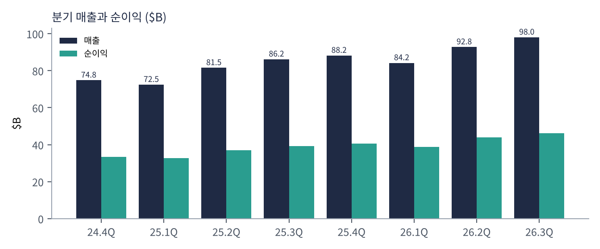
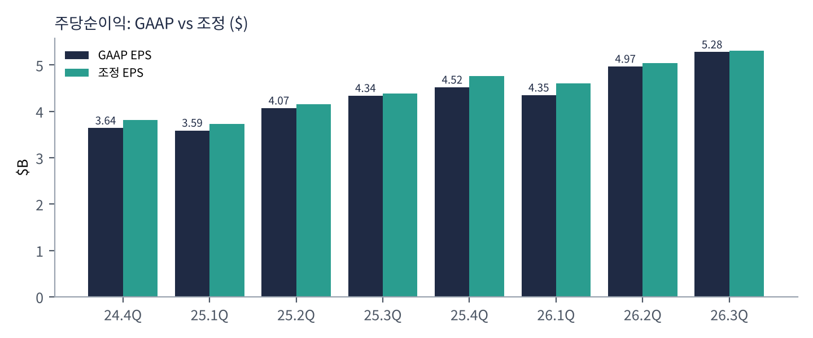
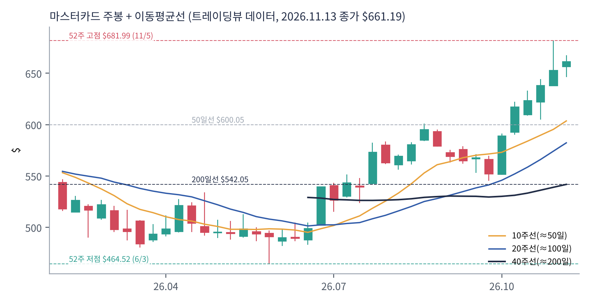
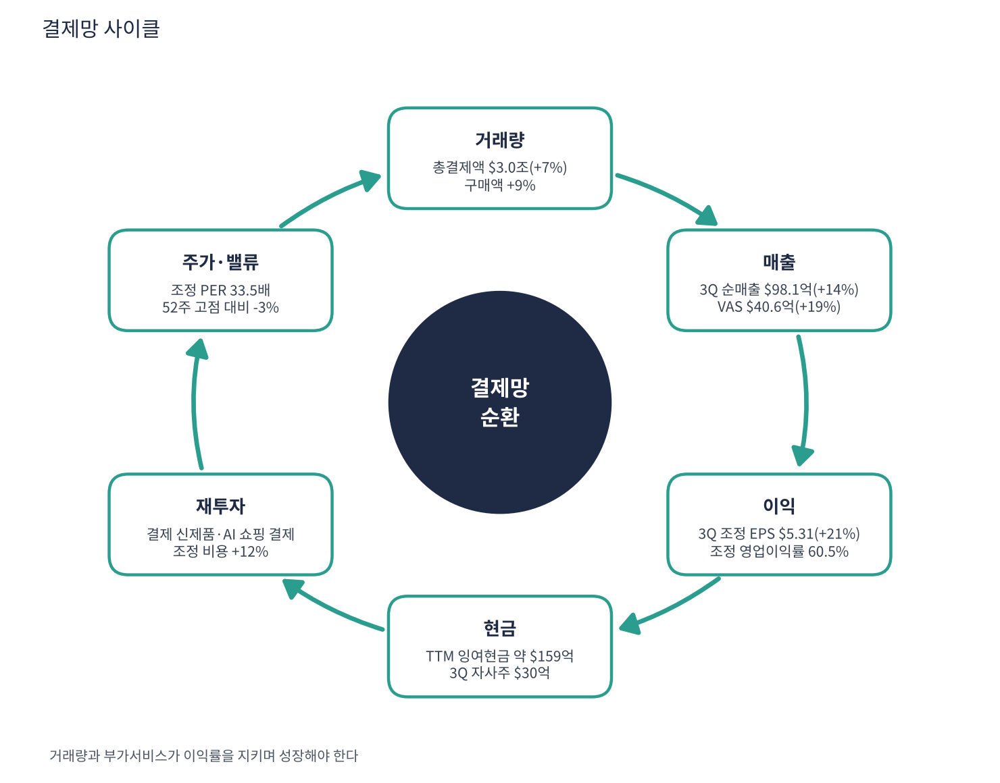

마스터카드(MA)는 전 세계 카드 결제망을 운영하고 결제 건수·금액에 수수료를 받는다. 직접 대출은 하지 않는다. 3Q 순매출이 14%, 조정 EPS가 21% 늘고 8개 CTA 신호가 모두 매수지만, 조정 PER 33.5배·PEG 1.48로 이미 비싸게 거래되는 회사다.
| 항목 | 내용 |
|---|---|
| 종목 | Mastercard (MA) · NYSE · 금융(결제) · 본사 미국 뉴욕주 퍼처스 |
| 밸류에이션 | PER 34.6배(GAAP TTM), 조정 기준 약 33.5배 · P/S 15.74배 (11/13 종가 $661.19) |
| 최근 분기(3Q26) | 순매출 $98.1억(+14%), 순이익 $46.3억(+18%), GAAP EPS $5.28(+22%), 조정 EPS $5.31(+21%) |
| 거래량 | 총결제액 $3.0조(+7%), 구매액 +9%(현지 통화) |
| 부가서비스 | VAS $40.6억(+19%), 순매출의 약 41% |
| 현금·부채 | 현금 약 $110억, 총차입금 약 $239억, TTM 잉여현금 약 $159억, TTM EBITDA 약 $227억(스캐너) |
| 가이던스 | 2026 순매출 10%대 초반(low teens) 성장 유지, 4Q 순매출 10%대 초반의 상단, 조정 비용 10%대 초반 성장, 세율 20~21% |
| 다음 일정 | 4Q26 실적 2027.1.28 예정(트레이딩뷰) |
| 직책 | 인물 | 역할·특징 |
|---|---|---|
| CEO | 마이클 미바크 | '더 많은 자격증명, 더 많은 손'을 강조 |
| CFO | 링 하이 | 4Q 가이던스와 환율 영향 설명 |
경영 스타일: '결제망 규모를 키우고 부가서비스로 성장 폭을 넓힌다'. 3Q에 자사주 $30억을 사고 배당 $7.63억을 지급했다. 승인된 자사주 매입 잔액은 $49억(10/26)이다. 중동 분쟁이 해당 지역 국가 간 여행 거래량에 영향을 준다고 CFO가 밝혔다.
결제망 외에 부가서비스(VAS)가 순매출의 41%를 차지한다. AI 쇼핑 비서용 결제 도구도 개발 중이지만 매출 기여는 공개되지 않았다(보도).
3Q에 국가 간 비여행 카드 미소지 결제가 +15%(2Q +20%)로 둔화했다고 보도됐다.
| 분기 | 매출 | 순이익 | EPS | 조정 EPS | 특이 사항 |
|---|---|---|---|---|---|
| 2024.4Q | $74.8억 | $33.4억 | 3.64 | 3.82 | |
| 2025.1Q | $72.5억 | $32.8억 | 3.59 | 3.73 | |
| 2025.2Q | $81.5억 | $37.0억 | 4.07 | 4.15 | |
| 2025.3Q | $86.2억 | $39.3억 | 4.34 | 4.38 | |
| 2025.4Q | $88.2억 | $40.6억 | 4.52 | 4.76 | |
| 2026.1Q | $84.2억 | $38.8억 | 4.35 | 4.60 | |
| 2026.2Q | $92.8억 | $43.9억 | 4.97 | 5.04 | |
| 2026.3Q | $98.0억 | $46.3억 | 5.28 | 5.31 | 순매출 +14%, 조정 EPS +21% |


흐름 요약: 분기 순매출은 $72~98억으로 늘었고 3Q26이 최대다. 조정 EPS는 $3.73에서 $5.31로 올랐다. 1Q 순매출이 4Q보다 줄고 3Q에 다시 커지는 패턴이 보인다. GAAP과 조정 EPS 차이는 지분투자 손익·특별 항목 제외 때문이라고 회사가 밝혔다. 영업이익과 분기 설비투자는 표에서 뺐다.
| 항목 | 3Q26 | 증감 | 비고 |
|---|---|---|---|
| 순매출 | $98.1억 | +14% | 현지 통화 기준도 +14% |
| 결제망 매출 | – | +11% | 국가 간·국내 거래 모두 기여 |
| VAS(부가서비스) | $40.6억 | +19% | 순매출의 약 41%(전년 39.8%) |
| 총결제액 | $3.0조 | +7% | 현지 통화 |
| 조정 영업이익률 | 60.5% | +0.7%p | 전년 59.8% |
결제망과 부가서비스가 함께 성장한다. 9개월 누적 순매출은 $275억(+15%)이다. 지역별 매출은 이 자료에서 구하지 못해 뺐다.
마스터카드는 '결제망 + 부가서비스' 구조를 키운다.
| 축 | 최근 움직임 |
|---|---|
| 결제망 | 총결제액 +7%, 구매액 +9% |
| 부가서비스 | VAS +19%, 매출의 41% |
| 주주환원 | 3Q 자사주 $30억, 배당 $7.63억 |
| 가이던스 | 2026 10%대 초반 매출 성장 유지 |

| 이동평균 | 값 | 종가 대비 | 해석 |
|---|---|---|---|
| 5일선 | $657.83 | +0.5% | 현재가가 위 |
| 20일선 | $639.97 | +3.3% | 현재가가 위 |
| 50일선 | $600.05 | +10.2% | 현재가가 위 |
| 100일선 | $577.98 | +14.4% | 현재가가 위 |
| 200일선 | $542.05 | +22.0% | 현재가가 약 22% 위 |
주봉 흐름: 2025년 10월 $545~580 → 2026년 6월 저점 $464.5 → 8월 $563~595 → 10월 $589~638 → 11/5 주 고점 $682 → 11/13 주 $661.2. 모든 이동평균선이 정렬 상승이다.
| 규칙 | 기준 | 현재 값 | 신호 |
|---|---|---|---|
| 장기 추세 필터 | 종가 vs 200일선 | $661.19 > $542.05 | 매수 |
| 중장기 교차 | 50일선 vs 200일선 | $600.05 > $542.05 | 매수 |
| 단기 교차 | 20일선 vs 50일선 | $639.97 > $600.05 | 매수 |
| 돈키언 채널 | 55일 고가 $681.99 / 저가 $545.40 | 중간값 $613.69 위 | 매수 |
| 1개월 모멘텀 | 21거래일 수익률 | +7.3% (기준 $616.32) | 매수 |
| 3개월 모멘텀 | 63거래일 수익률 | +17.6% (기준 $562.26) | 매수 |
| 6개월 모멘텀 | 126거래일 수익률 | +33.8% (기준 $494.20) | 매수 |
| 12개월 모멘텀 | 252거래일 수익률 | +17.8% (기준 $561.23) | 매수 |
| 종합 (8개 평균) | +1.00 | 강한 매수 |
해석: 8개 신호가 모두 매수(점수 +1.00)다. 현재가가 200일선보다 약 22% 위여서 과열 구간이다. 14일 ATR $16.87 (2.6%).
| 가격 | 무엇이 바뀌나 | 의미 |
|---|---|---|
| $616.3 이탈 | 1개월 기준가 | 1개월 모멘텀 매수 → 매도 |
| $613.7 이탈 | 돈키언 중간값 | 55일 채널 매수 → 매도 |
| $600.1 이탈 | 50일선 | 추세 신호 약화 |
| 구분 | 가격대 | 근거 |
|---|---|---|
| 저항 | $682 | 52주 고점(11/5) |
| 지지 1 | $640 | 20일선 $640.0 |
| 지지 2 | $600 ~ 616 | 50일선 $600.1, 1개월 기준가 $616.3 |
| 지지 3 | $578 | 100일선 |
모든 신호가 매수지만 고점 추격은 위험하다. $615~640 구간까지 눌릴 때 계획 비중의 30%만 진입하고 50일선($600) 아래 $598 종가 이탈 시 손절한다. 1차 목표 $682는 52주 고점, 2차 $730은 내 가정(+10%)이다. 조건은 1/28 실적에서 4Q 성장 확인이다.
| 악재 요인 | 내용 | 강도 |
|---|---|---|
| 높은 밸류에이션 | 조정 PER 33.5배, PEG 1.48, P/S 15.7배 | 높음 |
| 국가 간 둔화 | 비여행 국가 간 카드 미소지 결제 +20% → +15%(보도) | 중간 |
| 환율 역풍 | 4Q 순매출에 약 1%p(회사) | 낮음 |
| 지정학 | 중동 분쟁이 여행 거래량에 영향(CFO) | 중간 |
| 티커 | 회사 | PER(TTM) | PEG | P/S | EPS 성장(YoY) |
|---|---|---|---|---|---|
| MA | 마스터카드 | 33.5배 | 1.48 | 15.74배 | +23% |
| V | 비자 | 32.1배 | 2.03 | 17.23배 | +16% |
| AXP | 아메리칸 익스프레스 | 18.1배 | – | 2.48배 | +19% |
| PYPL | 페이팔 | 11.3배 | – | 1.45배 | +5% |
MA·V는 조정 EPS 기준(내 계산), AXP·PYPL은 트레이딩뷰 GAAP TTM이다. 카드 발행사(AXP)·핀테크(PYPL)는 사업 구조가 달라 직접 비교가 어렵다.
비교 결론: MA는 V와 비슷한 PER이지만 EPS 성장률이 높아 PEG가 낮다(1.48 대 2.03).
마스터카드는 현금 창출이 크고 차입금이 낮다. 현금 약 $110억, 총차입금 약 $239억이다.
| 지표 | 값 | 계산·출처 | 해석 |
|---|---|---|---|
| 현금 등 | 약 $110억 | 스캐너 | |
| 총차입금 | 약 $239억 | 스캐너 | 순부채 약 $129억 |
| TTM 잉여현금흐름 | 약 $159억 | 스캐너 | 시총 대비 2.8% |
| TTM EBITDA | 약 $227억 | 스캐너 | 순부채/EBITDA 약 0.6배 |
| 기준 | 값 | 비고 |
|---|---|---|
| P/S (TTM) | 15.74배 | 시총 $5,760억 ÷ 순매출 약 $363억(내 계산) |
| P/FCF | 약 36배 | 시총 ÷ 잉여현금 $159억(내 계산) |
| 동종 | 비자 17.2, 아멕스 2.5, 페이팔 1.5 | 11/13 스캐너 |
해석: 잉여현금 수익률은 2.8%로 낮다. 스트레스 가정: P/FCF 28배면 시총 $4,452억(약 $511, -23%), 33배면 $5,247억(약 $603, -9%), 40배면 $6,360억(약 $730, +10%)이다(내 가정, 잉여현금 $159억 고정).
| 지표 | 값 | 판정 |
|---|---|---|
| PER (GAAP TTM) | 34.6배 | 트레이딩뷰, TTM EPS $19.12 |
| PER (조정 TTM) | 33.5배 | 최근 4분기 조정 EPS 합 $19.71(내 계산) |
| EV / EBITDA | 약 25.9배 | EV ≈ 시총 $5,760억 + 차입금 $239억 − 현금 $110억 = $5,889억, ÷ $227억 |
| 방식 | PER | EPS 성장률 | PEG | 판정 |
|---|---|---|---|---|
| 트레이딩뷰 (GAAP TTM) | 34.6배 | +22.3% | 약 1.55 | 트레이딩뷰는 PEG 미제공. 내 계산 |
| 조정 EPS 기준 | 33.5배 | +22.6% | 약 1.48 | 기준 초과 |
| 조정 TTM $19.71 ÷ 직전 TTM $16.08 | – | – | – | 직전: 4Q24 3.82 + 1Q25 3.73 + 2Q25 4.15 + 3Q25 4.38 |
판정: 조정 PEG 약 1.48로 기준(1.0)을 넘음. 성장률이 22%대로 높아 비자(2.03)보다는 낮다. 다만 성장이 10% 안팎으로 둔화하면 PEG가 빠르게 높아진다.

마스터카드의 사이클은 거래량 → 순매출 → 이익 → 현금 → 환원·재투자다. 약한 고리는 국가 간 둔화와 비용 증가다.
| 고리 | 현재 숫자 | 고리 강도 | 약해지는 신호 |
|---|---|---|---|
| ① 거래량 | 총결제액 +7% | 강함 | 소비·여행 둔화 |
| ② 순매출 | $98.1억(+14%) | 강함 | 환율 역풍 약 1%p(4Q) |
| ③ 이익 | 조정 EPS +21%, 영업이익률 60.5% | 강함 | 비용 +12% |
| ④ 현금 | TTM 잉여현금 $159억 | 강함 | 소송·규제 |
| ⑤ 환원 | 3Q 자사주 $30억 | 강함 | 주가 상승 시 효율 저하 |
구조: 모든 고리가 강하다. 확인 지점은 조정 비용 +12%가 매출 성장 +14%를 넘지 않는지다.